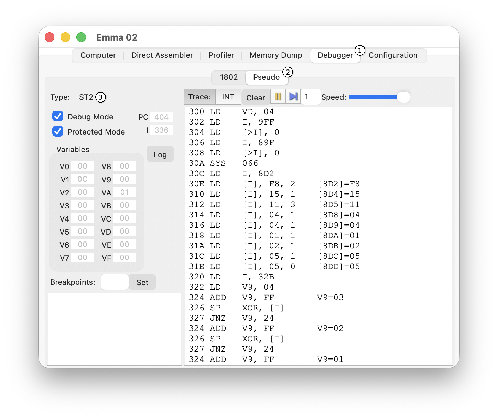
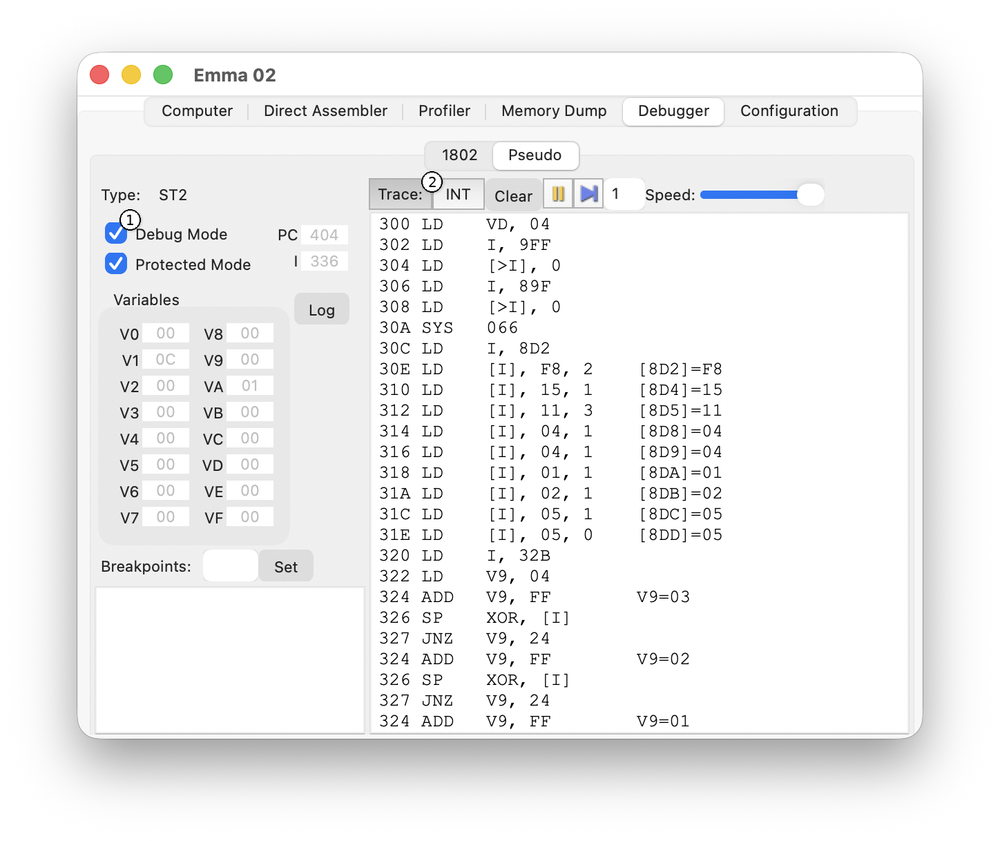
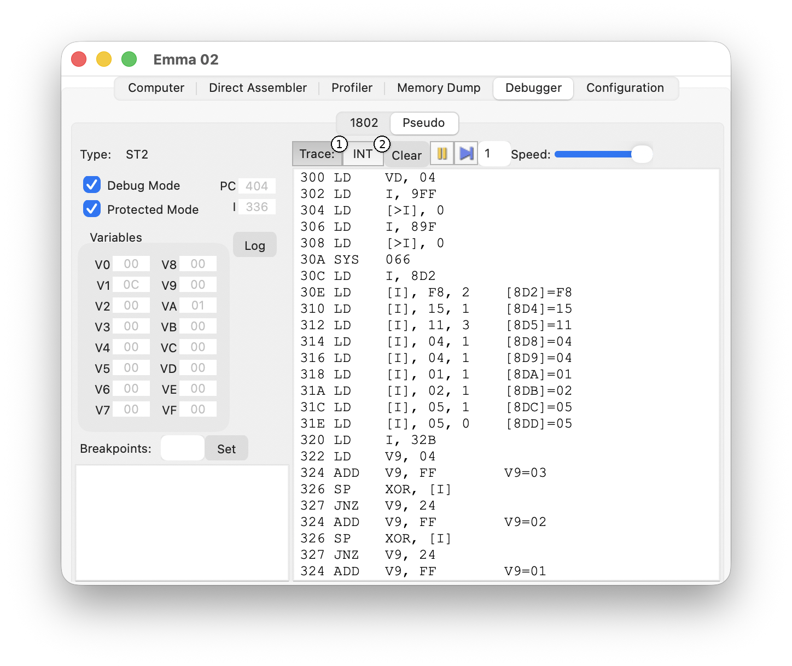
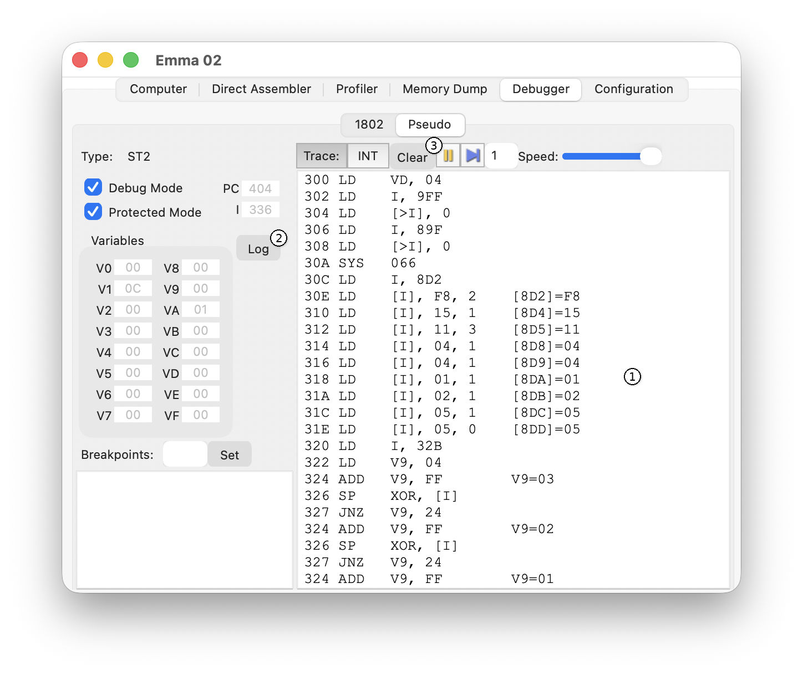
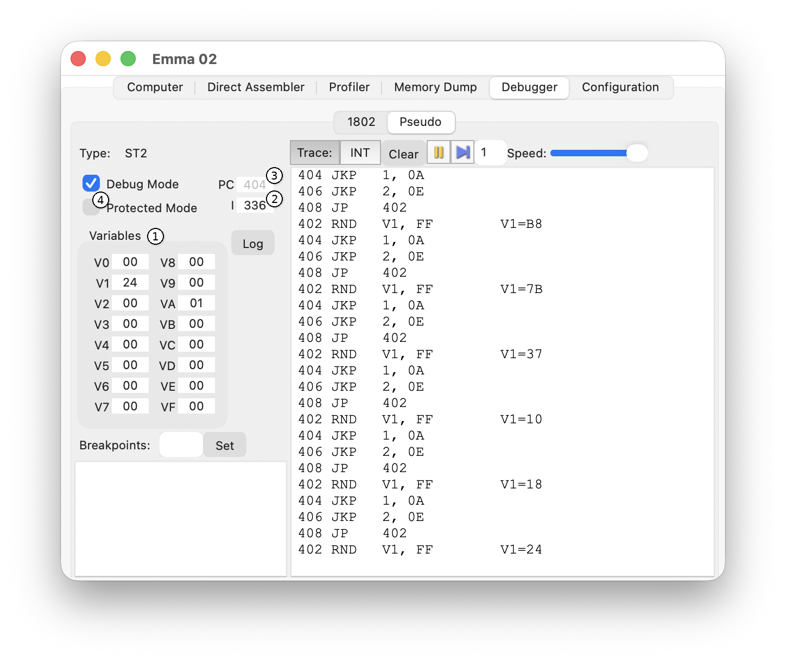
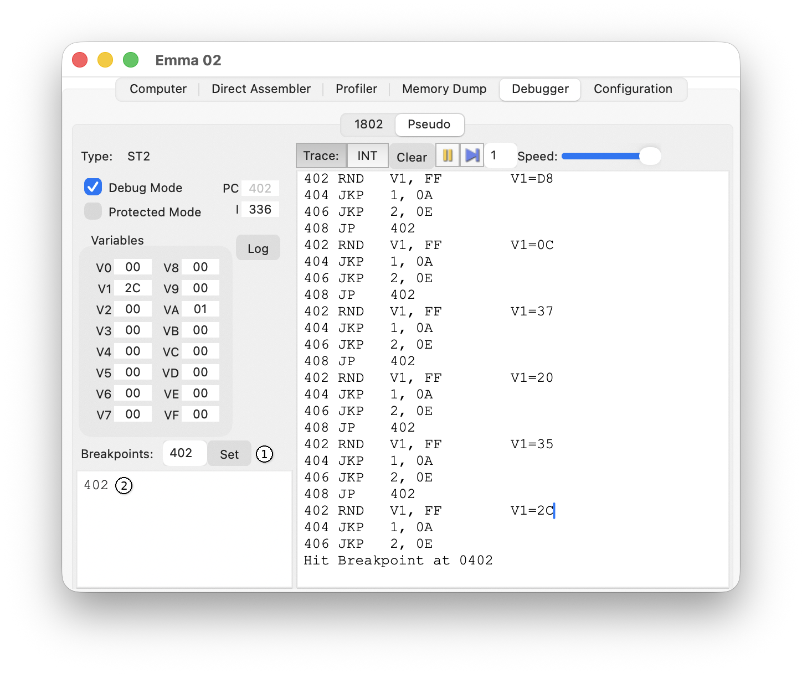

The Pseudo Debugger allows tracing and controlling of pseudo-code.
The main elements of the Pseudo debugger are shown in the screenshot below.

To open this tab, select the Debugger tab (1) and then the Pseudo sub-tab (2).
The type of pseudo-code is shown in the Pseudo Type field (3).
Debug mode enables instruction tracing and debugging controls.

Enable debug mode using the Debug Mode checkbox (1). Debug mode is also activated automatically when trace commands (Trace or INT) are used (2).
When debug mode is active, this is indicated in the title of the emulated computer window.
Note: Debug mode slows the emulator and increases host CPU usage.
The Trace section controls instruction tracing and stepping through program execution.
The tracing controls are shown in the screenshot below.

Trace output appears in the trace window (1) shown below.

Click Log (2) to save the trace output to a file. Click Clear (3) to clear the trace window.
Execution control buttons are shown in the screenshot below.
If the pause button is pressed during execution of a pseudo-code instruction, pseudo-code is paused only when the current instruction is finished. During execution of the current instruction the pause button will be disabled. This is especially visible when pausing during a command like LD Vx, K in Chip-8. In this case the pause command will only take effect after a key press.
Pseudo register control buttons are shown in the screenshot below.

The current values of all variables (1), the I register (2) and the PC register (3) are displayed.
By default, values cannot be edited (Protected Mode) to prevent crashes. To edit values (except the PC register), uncheck Protected (4).
To change a value, type the new value and press Enter. Changes are not applied until Enter is pressed. For best results, pause the emulator before editing values.
Breakpoints allow execution to pause automatically when a specified address is reached.

Enter an execution address in the Breakpoint text field (1) and press Enter or press the Set button. When execution reaches this address, the emulator pauses. All breakpoints are displayed (2) so they can be deleted, deactivated or edited.
Select a breakpoint in the list and press the Delete key to remove it.
(Windows only) Uncheck a breakpoint checkbox to deactivate it. Check it again to reactivate.
Select a breakpoint in the list and edit the text directly to modify it.